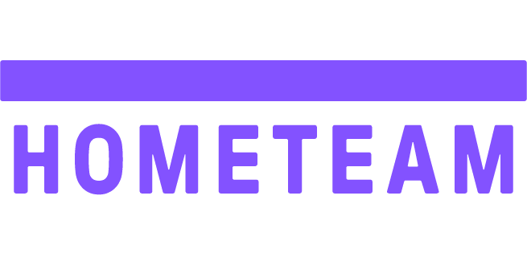
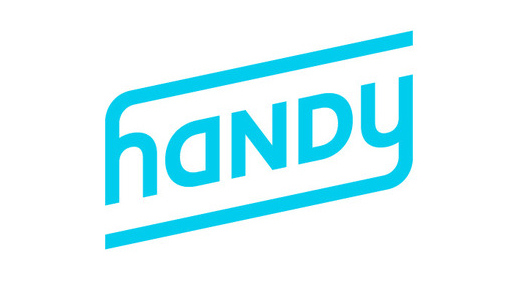

Product + Learnings
I enjoy building products that empower people and make a positive impact on the world.

Hometeam provides home healthcare for seniors who want to remain independent. We emphasize training the home health aide workforce, bringing technology into the home to connect it to the healthcare system and, most importantly, reducing costs and improving outcomes with the goal of creating beautiful days for older adults. I manage Revenue Operations and Product at Hometeam, which means that I get to work on our internal tools team to build out our workflows for invoicing, payroll, and electronic payments, and accounts receivable. I also spearheaded the development of our insurance billing product, which automates the preparation and faxing of materials to insurance companies after each invoice cycle.

Before Hometeam, I worked at Handy, an on-demand home services startup based in New York. It helped people book cleaners or handymen instantly through the website or mobile app. I joined when there were 6 team members and as a project manager took on many responsibilities in operations, marketing, recruiting, and user testing.
When not at work, I can be found at the park with my golden doodle puppy.
...or dog sitting for other puppy parents through
Dogvacay
...or working on a side project to support the dog owner community.